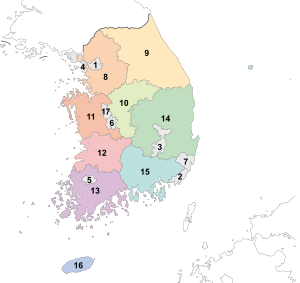
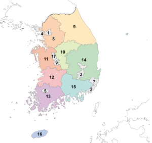

Organizare administrativ-teritorială
| Nume |
hangul |
populatie |
| Oras special |
| Seul |
서울특별시 |
10.421.782 |
| Orașe metropolitane |
| Busan |
부산광역시 |
3.635.389 |
| Daegu |
대구광역시 |
2.512.604 |
| Incheon |
인천광역시 |
2.628.000 |
| Gwangju |
광주광역시 |
1.415.953 |
| Ulsan |
울산광역시 |
1.087.958 |
| Daejeon |
대전광역시 |
1.442.857 |
| Provincii |
| Gyeonggi-do |
경기도 |
10.415.399 |
| Chungcheongbuk-do |
충청북도 |
1.462.621 |
| Jeollabuk-do |
전라북도 |
1.890.669 |
| Jeollanam-do |
전라남도 |
1.994.287 |
| Gyeongsangnam-do |
경상남도 |
2.970.929 |
| Provincie autonomă |
| Jeju-teukbyeoljachido |
제주특별자치도 |
560.000 |
| Oraș autonomă |
| Sejong-teukbyeoljachisi |
세종특별자치시 |
113.117 |
Coreea
Dorame
 
